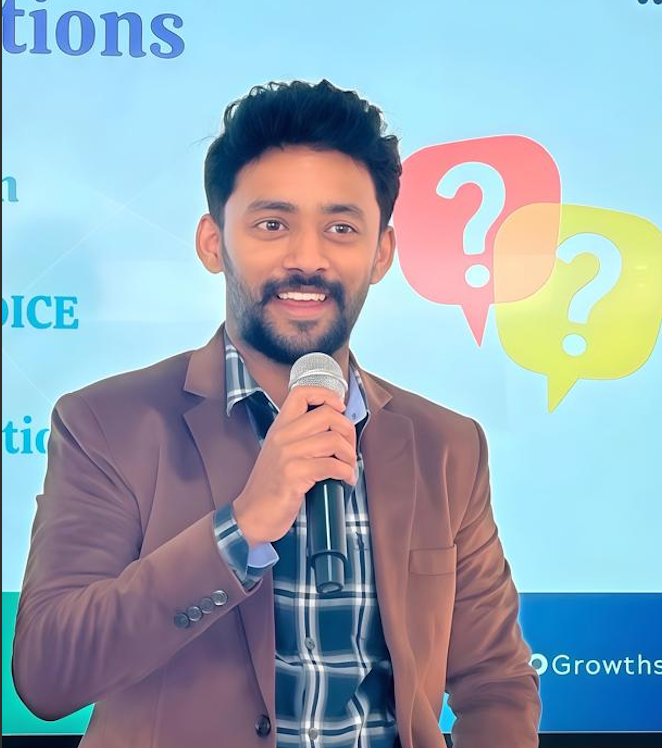
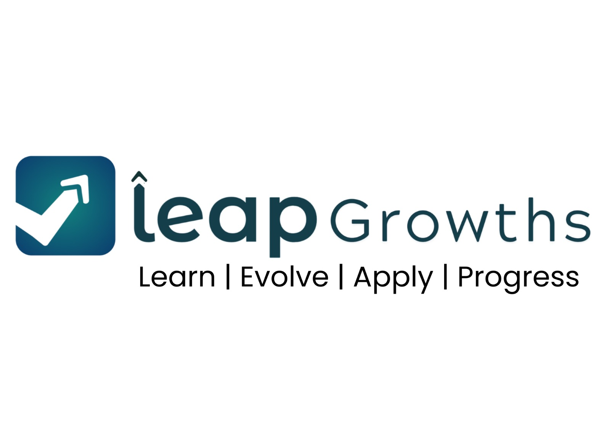

I spent years in the IT and technology sector — technically competent, professionally driven, and quietly falling apart on the inside. The emotional weight of navigating workplace relationships, unspoken conflicts, and the slow erosion of my own identity taught me something no corporate training manual ever could.
"The biggest professional skill gap in most organisations is not technical. It is emotional. And it is costing companies their best people."
That realisation became my purpose. I founded Leap Growths Academy and developed the LEAP Framework — a structured, evidence-informed methodology that helps professionals and teams move from emotional suppression to genuine connection, from reactive behaviour to emotionally intelligent leadership.
Today I work with individuals navigating relationship burnout and organisations building emotionally ready teams — with a focus on Bengaluru's tech ecosystem and an expanding reach into high-growth corporate markets globally.
